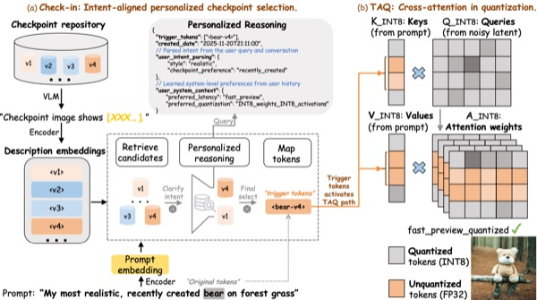
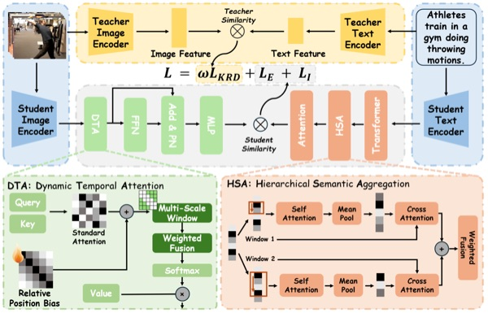
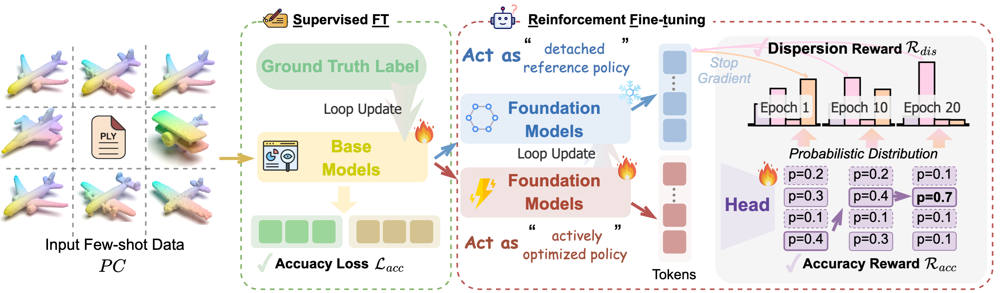

(* denotes equal contribution)  Qirui Wang, Qi Guo, Yiding Sun, Junkai Yang, Dongxu Zhang, Shanmin Pang, Qing Guo IEEE International Conference on Multimedia and Expo (ICME), 2026 (CORE A) arXiv / Code Personalized text-to-image serving breaks at two critical points: mapping ambiguous user requests to the right checkpoint, and compressing checkpoints without erasing the concepts they encode. We show that both can be addressed through the same signal—the trigger token—turning it from a finetuning artifact into the key primitive for scalable, faithful personalized generation.  Junkai Yang*, Qirui Wang*, Yaoqing Jin, Shuai Ma, Minghan Xu, Shanmin Pang IEEE International Conference on Multimedia and Expo (ICME), 2026 (CORE A) arXiv / Code Partially relevant video retrieval is challenging because language is compact while relevant visual evidence is sparse and temporally scattered. Our key insight is that bridging this asymmetry requires jointly refining query semantics and temporal event focus, enabling more precise retrieval in untrimmed videos.  Yankai Wang, Yiding Sun, Qirui Wang,, Pengbo Li, Chaoyi Lu, Dongxu Zhang IEEE International Conference on Multimedia and Expo (ICME), 2026 (CORE A) arXiv / Code Few-shot point cloud learning suffers from two coupled limits: supervised fine-tuning underuses 3D foundation priors, while generic RL objectives fail to preserve point cloud structure. Our key insight is that point-cloud-native rewards can improve discrimination while maintaining representational stability, unlocking stronger generalization under scarce supervision.
|
{kind=link}